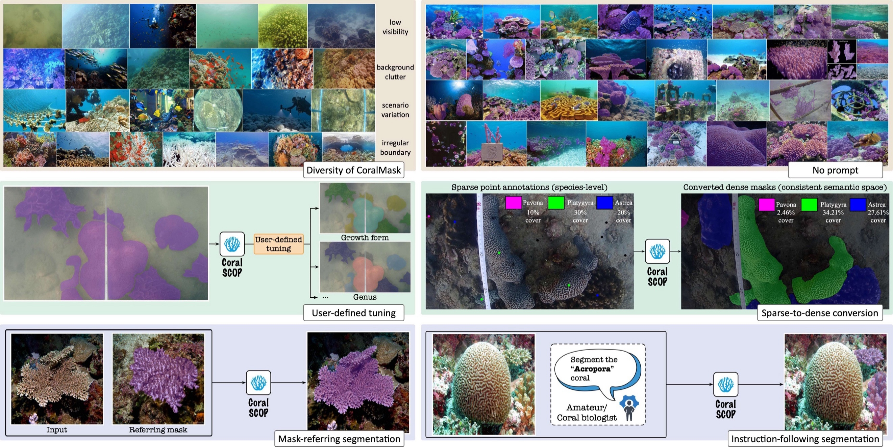
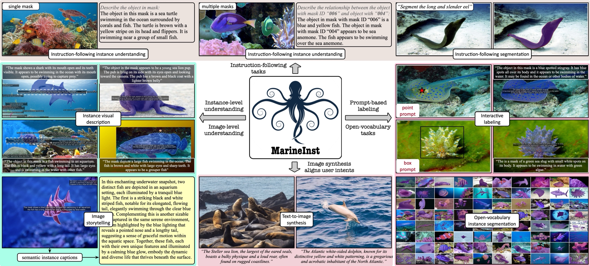
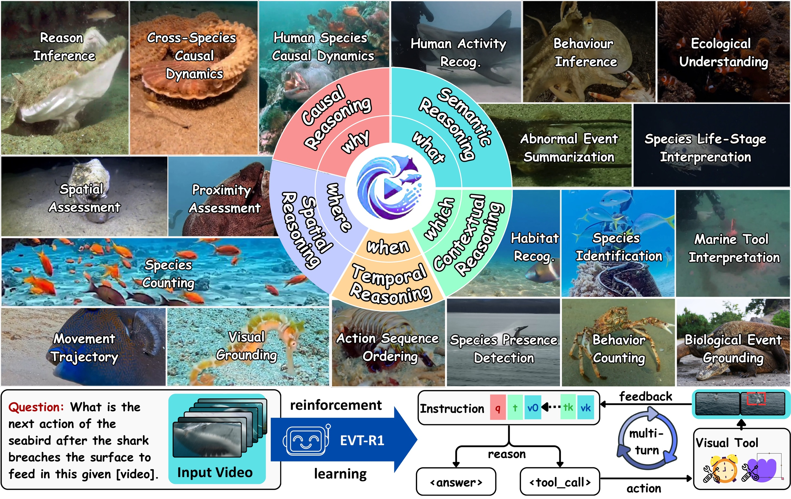

Marine AI develops foundation models, visual intelligence, and embodied systems for marine biodiversity, coral restoration, and ocean sustainability.
Coral reefs are vital marine ecosystems, but monitoring them at scale remains difficult due to underwater visibility, ecological complexity, and the need for expert annotation. We develop AI systems such as CoralSCOP to segment coral reef images across diverse underwater environments, enabling scalable coral monitoring, health assessment, and restoration support.

Marine environments contain diverse organisms, habitats, and visual conditions that challenge conventional AI models. We develop marine foundation models such as MarineInst to recognize, segment, and describe individual marine organisms at instance level, supporting biodiversity analysis, ecological interpretation, and AI-assisted marine science.

Marine videos contain sparse yet meaningful events, from species interactions to habitat changes and human activities. We develop event-centric Marine AI systems such as MarineEVT, where vision-language models learn to use visual tools for temporal and spatial grounding, enabling more reliable and comprehensive reasoning over underwater videos. This research opens a new direction for advanced marine-specific AI agents trained on a diverse suite of tools, enabling them to autonomously conduct ecological discovery, biodiversity monitoring, and sustainable ocean observation.

Understanding marine environments requires both visual recognition and spatial context. We develop underwater 3D mapping, semantic reconstruction, and robotic perception technologies to support habitat mapping, autonomous monitoring, and embodied AI systems for ocean science and sustainability.
...